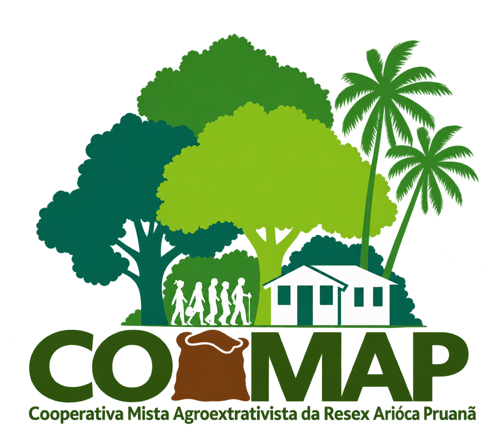

Cooperados
Moradores da RESEX Arioca Pruanã

A COOMAP é uma cooperativa formada por moradores da RESEX Arioca Pruanã, localizada às margens do Rio Oeiras, na Comunidade Deus Proverá, em Oeiras do Pará - PA.
A cooperativa tem como objetivo organizar os moradores, gerar renda para as famílias e comercializar os produtos da comunidade.
A COOMAP une moradores da RESEX Arioca Pruanã em torno do trabalho coletivo, da produção agroextrativista e do fortalecimento da economia das famílias da comunidade.
A COOMAP - Cooperativa Mista Agroextrativista da RESEX Arioca Pruanã tem como propósito organizar e fortalecer a produção dos moradores, criando melhores condições para a comercialização dos produtos da comunidade.
Por meio do cooperativismo, buscamos unir conhecimento, trabalho e produção, valorizando as atividades desenvolvidas pelas famílias que vivem na região do Rio Oeiras.
Moradores da RESEX Arioca Pruanã
Arioca Pruanã
Produção e recursos da região
Comunidade Deus Proverá
O cooperativismo fortalece a organização, valoriza a produção local e cria novas oportunidades para as famílias.
A diversidade da produção agroextrativista representa a força e o trabalho das famílias da RESEX Arioca Pruanã.

Produto florestal proveniente das atividades desenvolvidas na região.

Fruto de grande importância para a economia das comunidades amazônicas.

Produção agrícola das famílias da comunidade.

Fruto amazônico produzido na região.

Produto extrativista de importância para a comunidade.

Produção agrícola das famílias cooperadas.

Produto cultivado pelas famílias da comunidade.

Hortaliça presente na produção local.

Pesca e produção de pescado das comunidades ribeirinhas.

Fruto produzido pelas famílias da comunidade.

Produção de frutas da comunidade.

Produto agrícola cultivado na região.
A COOMAP atua no fortalecimento do agroextrativismo, valorizando a produção, os recursos da floresta e o trabalho das famílias da RESEX Arioca Pruanã.
Organização das atividades relacionadas à extração de produtos florestais, com destaque para a madeira proveniente das florestas nativas da região.
Valorização dos produtos da floresta e da agricultura familiar, reunindo atividades de cultivo, coleta e produção desenvolvidas pelas famílias cooperadas.
Apoio à produção de alimentos e frutos cultivados pelas famílias da comunidade, fortalecendo a produção local e a geração de renda.
Organização e comercialização da produção dos cooperados, buscando fortalecer o acesso aos mercados e melhorar as oportunidades de renda para as famílias.
Produção, floresta e comunidade caminhando juntas para fortalecer a economia local.
Conheça um pouco da comunidade, da floresta, do Rio Oeiras e das atividades desenvolvidas pelos cooperados da COOMAP.

Vida e trabalho das famílias cooperadas.

O rio que faz parte da vida da comunidade.

Riqueza natural da RESEX Arioca Pruanã.

Produção e aproveitamento dos recursos da região.

Produtos cultivados pelas famílias cooperadas.

Trabalho, união e fortalecimento da comunidade.
A COOMAP está localizada na Comunidade Deus Proverá, às margens do Rio Oeiras, na RESEX Arioca Pruanã, em Oeiras do Pará - PA.
Entre em contato conosco para conhecer melhor a cooperativa, nossos produtos e nossas atividades.
Comunidade Deus Proverá
Margem do Rio Oeiras
Oeiras do Pará - PA